ICTAGI2026
Date
14 – 16 Dec 2026
Venue
Meenakshi Sundararajan
Engineering College, Chennai
Our Organization & Industry Partners
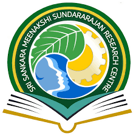

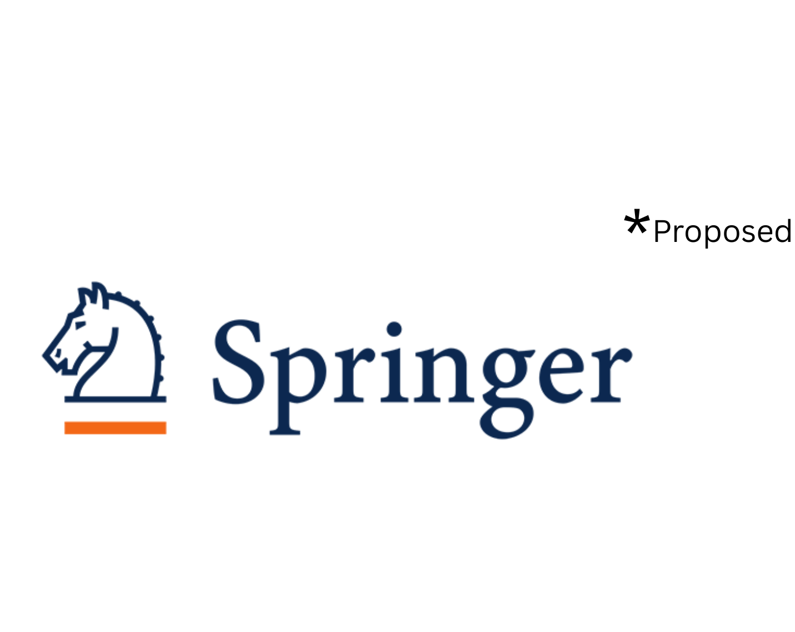
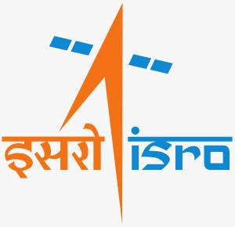
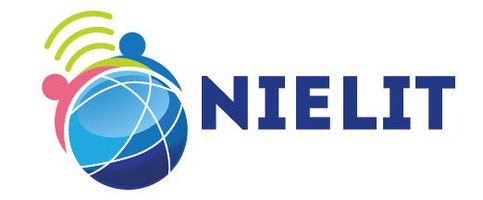
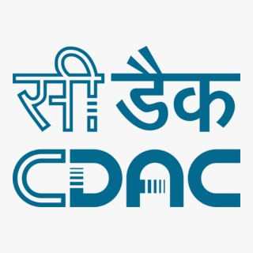
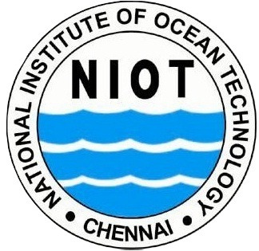
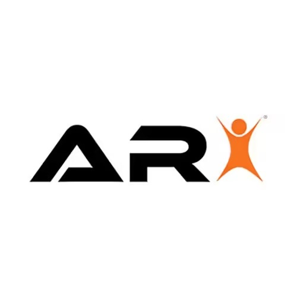
ABOUT US
ABOUT THE CONFERENCE
ICTAGI 2026 (International Conference on Transformative AI for Global Impact) is a premier gathering of researchers, practitioners, and industry experts. The conference focuses on exploring how Artificial Intelligence transforms industries, society, and sustainability.
The conference will be held at Meenakshi Sundararajan Engineering College, Chennai, India from 14 – 16 December, 2026. It provides a premier interdisciplinary platform to discuss the most recent innovations, trends, and concerns as well as practical challenges encountered and solutions adopted in the fields of Artificial Intelligence and its global impact.
KEYNOTE SPEAKERS
Sasitharan Nagapan
Associate Professor, Faculty of Civil Engineering and Built Environment, University Tun Hussein Onn Malaysia, Johor, Malaysia
Dr Sathishkumar Veerappampalayam Easwaramoorthy
Senior Lecturer, School of Computing and Artificial Intelligence, Sunway University, Malaysia
Mr. Jai Ganesh Suresh
Senior AI Architect Lead, Valeo India Pvt. Ltd
Karthiganesh Durai
Founder & CEO, Kwantumg Research Labs Pvt Ltd, Bengaluru, Karnataka, India
Dr. Balakrishnan S
Associate Professor, Department of Physics, School of Advanced Sciences, Vellore Institute of Technology, Vellore, Tamil Nadu, India
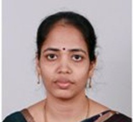
Dr. Manjula Gandhi
Associate Professor & Head (I/C), Department of Computing (Software Systems), Coimbatore Institute of Technology, Coimbatore, Tamil Nadu, India
Dr. Shashi Kant Pandey
Scientist C @SETS, Under the O/o Principal Scientific Advisor to the GOI, Chennai, Tamil Nadu, India
ABOUT MSEC
Meenakshi Sundararajan Engineering College (MSEC) was established by the IIET Society in 2001. This institution is a part of the prestigious KRS Group of Institutions, which also includes the renowned IIET (Indian Institute of Engineering Technology), established in 1947 by our Founder, Late Shri K. R. Sundararajan, a visionary educationist and philanthropist who founded the well-known Meenakshi College for Women; and the Meenakshi Sundararajan School of Management. The institutions on the KRS Campus are known for the quality education and discipline. We have consistently outshone our peers not only in academics but also in co-curricular activities. The institution is committed to imparting engineering education to young men and women, grooming their overall personality with the highest emphasis on ethical values, and preparing them to face the challenges of the industry, nation and abroad at large.
CHIEF PATRONS
Dr. K. S. Lakshmi
Correspondent, MSEC
Prof. N. Sreekanth
Secretary, MSEC
Prof. U. Deepa
Director, MSEC
CO-PATRONS
Dr. S. V. Saravanan
Principal, MSEC
Dr. S. Poongothai
Dean-Research, MSEC
GENERAL CHAIRS
Dr. V.J. Arul Karthick
Dean-IQAC, MSEC
Contact: 9003116690
Dr. R. Arivazhagan
Head-Research, MSEC
Contact: 9003116690
CO-CHAIRS
Mr. Mohan Raj Vijayan
Assistant Professor, IT, MSEC
Contact: 7358058584
Dr. S. Sowmya
Associate Professor, ECE, MSEC
Contact: 9884392869
ADVISORY COMMITTEE
TECHNICAL COMMITTEE
PUBLICATIONS & REGISTRATION
Publication Policy
All accepted papers will be published in Springer Journal
IMPORTANT DATES
Full Paper Submission
10 July 2026
Acceptance Notification
14 October 2026
Registration & Camera Ready
01 – 15 November 2026
Conference Date
14 – 16 December 2026
CALL FOR PAPERS
Themes and Research Areas
Foundations of Artificial Intelligence and Intelligent Systems
- Computational Logic, Algorithms, and Mathematical Foundations of AI
- Neuro-Symbolic AI and Knowledge Representation
- Machine Learning, Deep Learning, and Soft Computing
- Explainable, Trustworthy, and Secure AI
- High-Performance, Distributed, and Edge AI Systems
AI for Data Science, Big Data, and Decision Intelligence
- Data Mining and Knowledge Discovery
- Big Data Analytics and Intelligent Decision Systems
- Information Retrieval and Recommendation Systems
- Business Analytics and Management Information Systems
- AI for Policy and Strategic Decision Support
AI in Medicine, Healthcare, and Life Sciences
- AI for Medical Imaging and Diagnostics
- Predictive Healthcare and Disease Analytics
- AI in Drug Discovery, Genomics, and Bioinformatics
- Smart Wearables, IoT, and Digital Health
- Ethical and Explainable AI in Healthcare
AI for Sustainable Energy, Power Systems, and Smart Grids
- Smart Grids and Cognitive Energy Networks
- AI for Renewable Energy Integration
- Digital Twins for Power and Energy Infrastructure
- Reinforcement Learning for Energy Optimization
- Explainable AI for Safety-Critical Energy Systems
AI for Smart Cities, Infrastructure, and Climate Resilience
- Structural Health Monitoring and Intelligent Infrastructure
- Smart Transportation and Traffic Optimization
- Disaster Prediction and Risk Mitigation
- AI for Climate Modeling and Environmental Monitoring
- Sustainable and Resilient Urban Systems
AI for Advanced Manufacturing and Industrial Sustainability
- AI-Driven Design Optimization and Digital Manufacturing
- Predictive Maintenance and Industrial Analytics
- AI in Materials, Nanotechnology, and Applied Physics
- Robotics, Automation, and Computer Vision
- Net-Zero and Energy-Efficient Industrial Systems
AI for Cybersecurity, Defence, and Strategic Resilience
- AI for Threat Detection and Surveillance
- Cybersecurity and Information Warfare
- Autonomous and Semi-Autonomous Systems
- Defence Decision Support and Digital Twins
- Dual-Use AI for Public Safety and Disaster Response
Generative AI and Human–AI Collaboration
- Generative and Multimodal AI Models
- AI for Creativity, Design, and Digital Media
- Human–AI Interaction and Collaborative Intelligence
- Responsible and Ethical Generative AI
AI, Indian Knowledge Systems (IKS), and Indigenous Intelligence
- AI-Based Modeling of Indian Knowledge Systems
- Computational Intelligence Inspired by Indian Philosophy
- AI in Ayurveda, Yoga, and Traditional Healthcare
- Ethical AI Frameworks from Indigenous Perspectives
- Digitization and Preservation of Indigenous Knowledge
AI for Society, Ethics, Governance, and Global Good
- Ethical, Responsible, and Human-Centric AI
- AI for Governance, Public Policy, and Social Equity
- AI for Sustainable Development Goals (SDGs)
- Global AI Governance, Law, and Societal Impact
AI for Environmental and Biodiversity Intelligence
- AI for Ecosystem Monitoring and Biodiversity Conservation
- Satellite, Drone, and Sensor-Based Environmental Intelligence
- AI for Pollution Detection and Sustainability
- Climate–Ecosystem Interaction Modeling
- AI for Wildlife Protection and Habitat Restoration
AI for Agriculture, Food Security, and Sustainable Farming
- Precision Agriculture and Smart Farming
- AI for Crop Yield Prediction and Disease Detection
- Intelligent Irrigation and Resource Optimization
- AI for Food Supply Chains and Traceability
- Climate-Resilient and Sustainable Agri-Tech
AI for Education, Learning Analytics, and Skill Development
- Intelligent Tutoring and Personalized Learning
- AI-Based Learning Analytics and Assessment
- Adaptive Curriculum Design
- AI for Lifelong Learning and Workforce Reskilling
- Ethical and Inclusive AI in Education
AI for Financial Systems and Inclusive Economic Growth
- AI in Financial Risk Analysis and Fraud Detection
- Economic Forecasting and Market Intelligence
- AI for Digital Finance and Financial Inclusion
- Intelligent Credit Scoring and Microfinance
- Ethical AI in FinTech
AI for Language, Multilingual Intelligence, and Communication
- Multilingual and Low-Resource Language Models
- Speech, Text, and Cross-Lingual Translation
- AI for Cultural and Language Preservation
- Language Technologies for Governance and Education
- Responsible and Inclusive Language AI
AI for Public Health and Global Health Equity
- AI-Based Disease Surveillance and Early Warning
- Population Health Analytics and Policy Modeling
- AI for Healthcare Accessibility and Equity
- AI in Epidemic Preparedness and Response
- Ethical AI for Global Public Health
AI for Human Augmentation and Assistive Technologies
- AI-Enabled Assistive and Rehabilitation Systems
- Human–AI Symbiosis and Cognitive Augmentation
- AI for Accessibility and Disability Inclusion
- Brain–Computer Interfaces and Intelligent Prosthetics
- Ethical and Responsible Human Augmentation
AI for LegalTech, Blockchain, and Trusted Digital Governance
- AI for Legal Analytics and Contract Automation
- AI in Regulatory Compliance and Risk Management
- Blockchain and AI for Transparent Governance
- Smart Contracts and Decentralized Trust Systems
- Secure and Ethical AI for Legal Systems
AI for Space Science and Satellite Intelligence
- Autonomous Spacecraft and Satellite Systems
- AI for Astronomical and Space Data Analysis
- Planetary Robotics and Surface Exploration
- Space Weather Prediction and Risk Analysis
- AI for Space Mission Planning and Sustainability
AI for Quantum Computing and Quantum Intelligence
- Quantum Machine Learning and Hybrid Quantum–AI Models
- AI-Assisted Quantum Algorithm Design
- AI for Quantum Error Correction and Noise Mitigation
- Quantum-Inspired AI for Large-Scale Optimization
- AI-Driven Quantum Hardware Control
AI for Management Studies and Business Transformation
- AI-Driven Strategic Planning and Decision Intelligence
- Generative AI for Marketing, Branding, and Customer Engagement
- AI for Human Resource Analytics, Talent Management, and Workforce Reskilling
- AI for Financial Intelligence, Risk Forecasting, and Fraud Detection
- AI for Operations, Supply Chain Optimization, and Entrepreneurial Growth
AI in Other Fields
- Innovative AI Applications across Domains
- Cross-Disciplinary AI Research
- Emerging Trends and Future Technologies
- Student and Researcher Innovation Showcase
SPONSORSHIP
- Company logo on all conference materials (Banners, Website, Brochure)
- 3 Complimentary registrations
- Speaking opportunity in the plenary session (10 mins)
- Exhibition stall (3x3 m) at a prime location
- Special recognition during the inauguration and valedictory functions
PAPER SUBMISSION & REGISTRATION
Submit your paper and complete your registration in one step using the form below. The registration fee includes conference materials, lunch, and refreshment.
Submission Guidelines
Final Data Submission
Soft copies of the final paper should be submitted in full as per the conference schedule.
File Format
Papers must be submitted in PDF or Word format.
Online Participation
The conditions for online participation will be noted on the website.
Registration Categories
- 1Presentation only
- 2Presentation and Scopus Publication
Paper Submission & Review Policy
All accepted papers will be published in Scopus Proceedings / Scopus Indexed Journals.
At least one author must register for each accepted paper to be published. Papers will undergo a plagiarism check, and those with similarity above the acceptable limit will be rejected initially.
ABOUT CHENNAI
Chennai, formerly Madras, is the capital city of Tamil Nadu, India. Located on the Coromandel Coast of the Bay of Bengal, it is one of the largest cultural, economic, and educational centers of South India. Known as the "Gateway to South India," Chennai is famous for its rich heritage, classical music, dance forms, and delicious cuisine.
Marina Beach
Iconic coastline of Chennai, one of the longest urban beaches in the world.
Kapaleeswarar Temple
Historic Dravidian architecture dedicated to Lord Shiva in Mylapore.
Santhome Basilica
Major Christian landmark built over the tomb of St. Thomas.
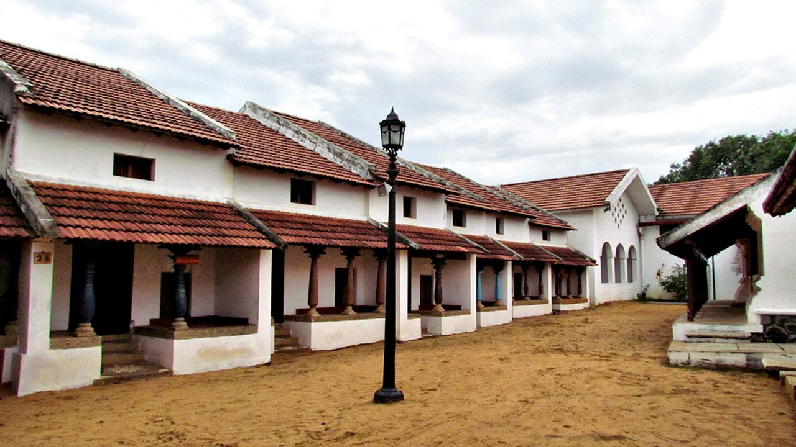
DakshinaChitra Heritage Museum
Living museum showcasing South Indian heritage, art, and traditional architecture.
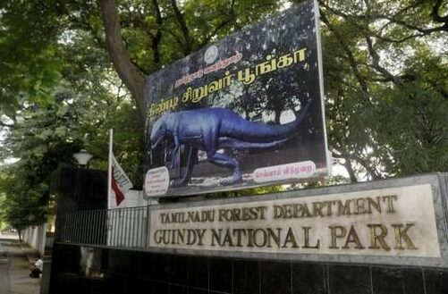
Guindy National Park
One of India's smallest national parks located within city limits, home to diverse wildlife.
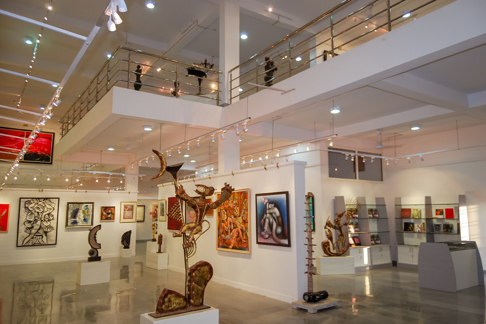
Cholamandalam Artists Village
Historic artists' commune and contemporary art center showcasing Indian modern art.
Modern Chennai Skyline
A growing metro hub showcasing the city's development.
Ripon Building
Iconic Indo-Saracenic landmark and Chennai Corporation headquarters.
Valluvar Kottam
Monument honoring the great Tamil poet Thiruvalluvar.
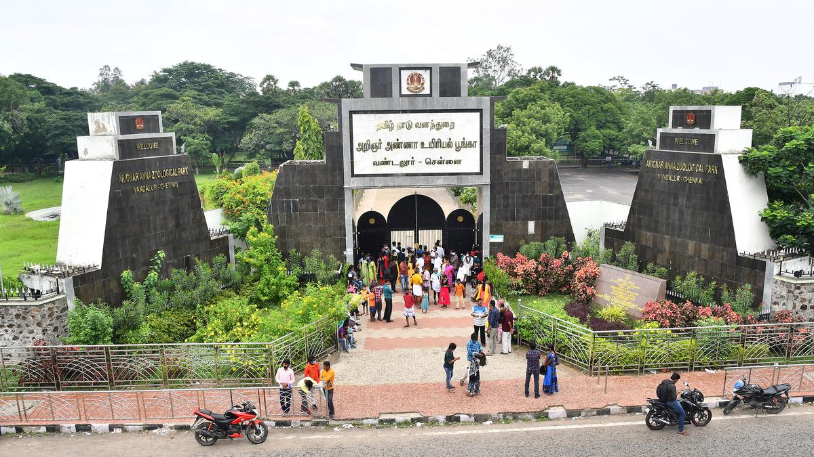
Vandalur Zoo
One of India's largest zoological parks with diverse wildlife.
Mahabalipuram
UNESCO World Heritage site known for ancient rock-cut temples.

Sharadambal Temple
Dedicated to Goddess Sharadambal in varying architectural styles.